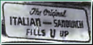

1944-1993
Way back in the 1940's Luigi's was known as Louie's Cafe, a tiny bar on the outskirts of Fresno on Blackstone, north of Shaw. There was a little kitchen in the back where Luigi's wife Lucia would make a pot of meat sauce for their macaroni. Lucia would hollow out a French roll and put the pieces of tender meat and sauce in it. One time she was eating this in the bar and a customer asked if he could have one. She made him one and soon more customers were asking for the 'Italian' sandwich. Well Luigi thought "Hey, I may as well make some money with this 'Italian' sandwich" so he started selling it in the bar. Well the sandwich became very popular as there was nothing like it anywhere around. After he changed the name from Louie's Cafe to Luigi's they put a sign on the front of the building that said "The Original Italian Sandwich" and underneath it "Fills U Up".

As the years went by the menu began to grow. To this day when I run into people and they find out we owned Luigi's, the first thing they talk about is our Original Italian Steak Sandwich. The business finally closed in 1993 after 49 years but we still offer full service Italian food catering with such items as Lasagna, Eggplant Parmigiana, Manicotti, Baked Mostaccioli, Chicken Cacciatore, Chicken Parmigiana, and of course the Original Italian Steak Sandwich and our Homemade Italian Rum Cake. Visit our menu page and don't forget the home cured hot chili peppers. (Scroll down to view Luigi's history)